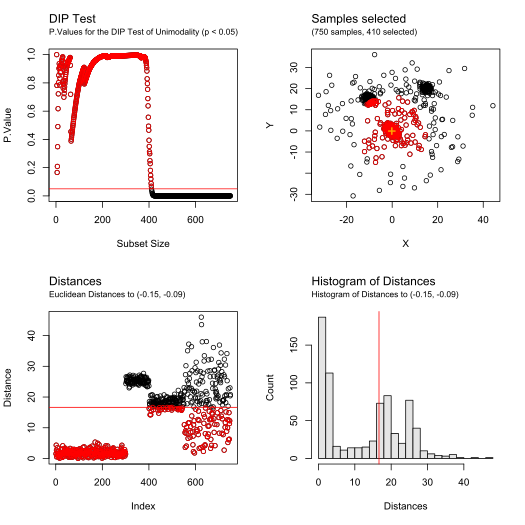
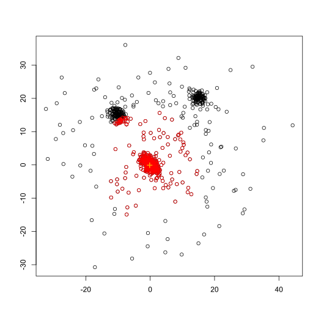
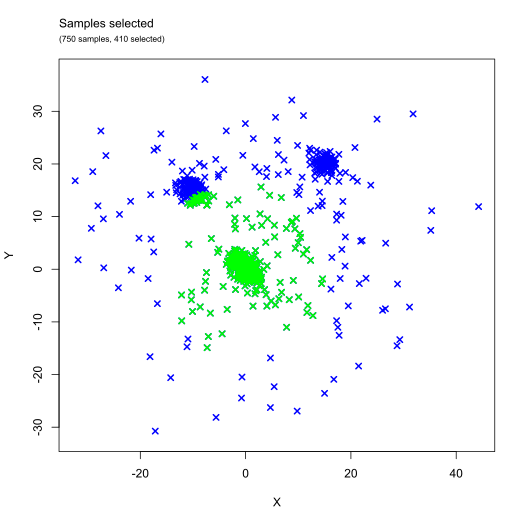
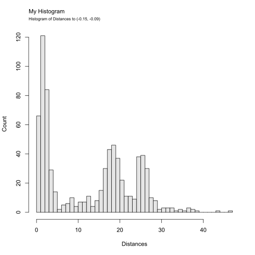

Plot method for BRIL.Filtering objects
# S3 method for BRIL.Filtering plot( x, contents = c("p.values", "scatterplot", "dist", "hist"), showCenter = TRUE, showSelection = TRUE, col = "black", colSelection = "red", colCenter = "orange", mtextTitles = TRUE, mfrow, ... )
| x | An object of class |
|---|---|
| contents | Contents to be displayed, options are "p.values", "scatterplot", "dist", "hist" and "all" |
| showCenter | Logical value, to show the center used in the filtering |
| showSelection | Logical value, to highlight the samples selected by the filtering process |
| col | Default color for non-selected samples (default: "black") |
| colSelection | Color of the selected samples (default: "red") |
| colCenter | Color for the center in "scatterplot" (default: "orange") |
| mtextTitles | Logical value, |
| mfrow | Number of rows and columns of the figure (example: c(4,1)) |
| ... | Other arguments passed to or from other methods (such as pch for the symbols, main and sub for title and subtitle, xlab, xmin, ...) |
Red intercept lines correspond to the
selection based on the p.values exceeding the given threshold.
To display all the p.values, rerun the function filter_outliers()
with the parameter debug = TRUE
contents options:
"p.values" provides a plot of the test p.values (in function of the subset size)
"scatterplot" displays the data in cartesian coordinates. Selected samples are displayed in red, and the center used to compute distances as an orange cross
"dist" shows the distances of each sample to the center provided
in filter_outliers() (in function of sample index)
"hist" draws an histogram of the distances of the samples to
the center provided in filter_outliers()
"all" displays a figure with all of the options above
# Illustrative data XY <- rbind( mvtnorm::rmvnorm(300, c(0, 0), diag(2) * 3 - 1), mvtnorm::rmvnorm(100, c(15, 20), diag(2)), mvtnorm::rmvnorm(150, c(-10, 15), diag(2) * 2 - 0.5), mvtnorm::rmvnorm(200, c(5, 5), diag(2) * 200) ) # Process the data filtering <- filter_outliers(XY, median_rec(XY)$median, test = "DIP", debug = TRUE) # Plot all default figures plot(filtering)# Change the layout to vertical plot(filtering, contents = c("pvalues", "scatterplot"), mfrow = c(2, 1))# Remove title, subtitle, and axis labels plot(filtering, contents = "scatterplot", main = "", sub = "", ylab = "", xlab = "")# Other graphical options plot(filtering, contents = "scatterplot", asp = 1, xlim = c(-30, 30), ylim = c(-30, 30))plot(filtering, contents = "scatterplot", asp = 1, pch = 4, lwd = 2, col = "blue", colSelection = "green", showCenter = FALSE )